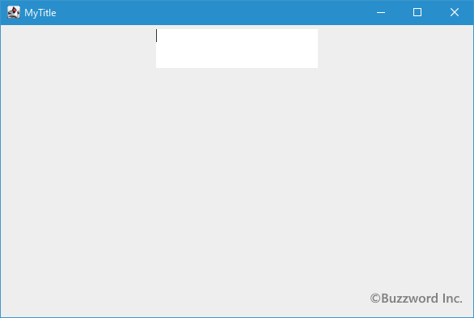
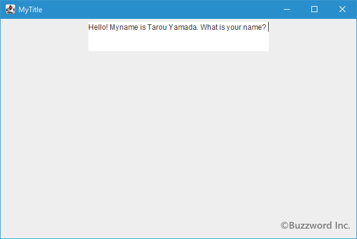
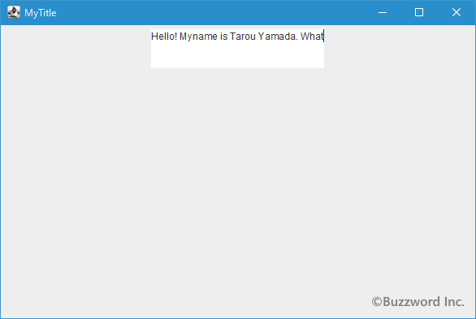
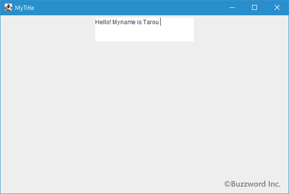
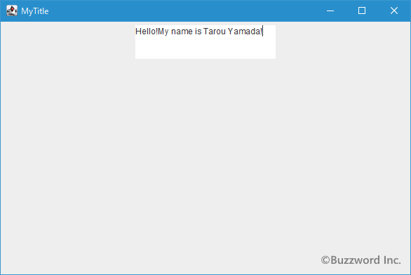
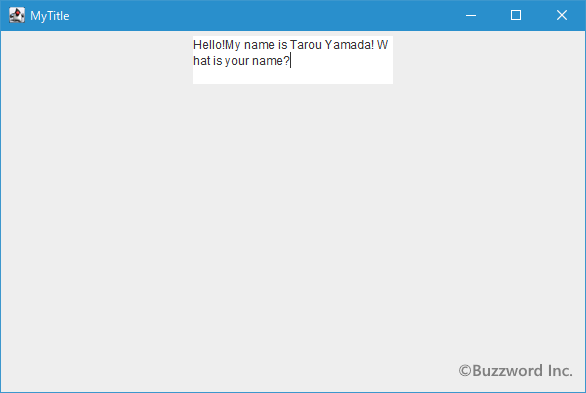
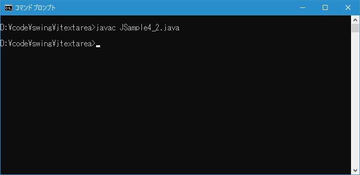
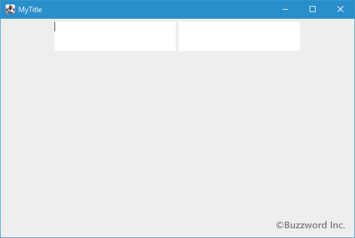
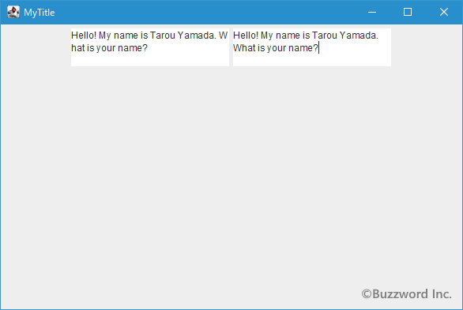

テキストエリアに入力されたテキストが折り返して表示されるように設定する
テキストエリアはデフォルトの設定では横幅いっぱいまでテキストを入力しても自動的には折り返しが行われません。利用者が改行を行わない限りはそのままテキストエリアが自動的に拡張されます。ここでは横幅いっぱいまでテキストが入力された時に折り返して表示するように設定する方法を解説します。
テキストエリアで折り返しが行われるように設定する
最初にデフォルトの設定でどのようになるのかを確認しておきます。次のテキストエリアは行数と列数を指定して作成したものです。

テキストエリアの横幅を超えてテキストを入力していくと、テキストエリアの幅が自動的に拡張されて大きくなっていきます。

入力したテキストを削除していくと、今度はテキストエリアの幅が縮小して小さくなっていきます。(ただしテキストエリアを作成した時に指定した列数よりも小さくはなりません)。


このようにテキストエリアのデフォルトの設定では、利用者が明示的に [Enter] キーなどを押して改行を行わないと折り返しは行われません。
テキストエリアに入力したテキストが幅いっぱいのところで折り返すようにするには JTextArea クラスで用意されている setLineWrap メソッドを使います。
public void setLineWrap?(boolean wrap)
テキスト領域の行折返しポリシーを設定します。 trueに設定すると、割当て幅に収まりきらない長さの行は折り返されます。 falseに設定すると、行は折り返されません。 ポリシーを変更すると、PropertyChangeイベント(lineWrap)が発生します。 デフォルトではこのプロパティはfalseです。
パラメータ:
wrap - 行を折り返すかどうかを示す
引数には折り返しを行うかどうかを表す boolean 型の値を指定します。 true を設定すると折り返しが行われます。デフォルトの値は false です。
実際の使い方は次のようになります。
JTextArea? textarea = new JTextArea?(3, 20); textarea.setLineWrap(true);
なお折り返して表示されているだけで入力されたテキストに改行が自動的に挿入されているわけではありません。
サンプルプログラム
それでは簡単なサンプルプログラムを作って試してみます。テキストエディタで次のように記述したあと、 JSample4_1.java という名前で保存します。
import javax.swing.JFrame;
import javax.swing.JTextArea;
import javax.swing.JPanel;
import java.awt.Container;
import java.awt.BorderLayout;
class JSample4_1 extends JFrame{
public static void main(String args[]){
JSample4_1 frame = new JSample4_1("MyTitle");
frame.setVisible(true);
}
JSample4_1(String title){
setTitle(title);
setBounds(100, 100, 600, 400);
setDefaultCloseOperation(JFrame.EXIT_ON_CLOSE);
JTextArea textarea = new JTextArea(3, 20);
textarea.setLineWrap(true);
JPanel p = new JPanel();
p.add(textarea);
Container contentPane = getContentPane();
contentPane.add(p, BorderLayout.CENTER);
}
}
次のようにコンパイルを行います。
javac JSample4_1.java
コンパイルが終わりましたら実行します。
java JSample4_1
追加されたテキストエリアは折り返しが行われるように設定してあります。その為、テキストのエリアの幅までテキストが入力されると自動的に折り返して表示されます。


折り返しを単語単位で行う
setLineWrap メソッドを使うことでテキストエリアの幅で折り返しを行うことが出来ますが、英単語など単語の途中で折り返しが行われると見難くなることがあります。そこでテキストエリアの幅で無条件に折り返しを行うのではなく、単語が分割されないように単語の途中でテキストエリアの幅に達した場合には単語の先頭から次の行へ表示させることができます。
折り返しを単語単位で行うようにするには JTextArea クラスで用意されている setWrapStyleWord メソッドを使います。
public void setWrapStyleWord?(boolean word)
テキスト領域が折返し行の場合に使う折返し書式を設定します。 trueに設定すると、割当て幅に収まりきらない長さの行はワード境界(空白部分)で折り返されます。 falseに設定すると、行は文字境界で折り返されます。 デフォルトではこのプロパティはfalseです。
パラメータ:
word - 行折返しにワード境界を使用するかどうかを示す
引数には単語単位で折り返しを行うかどうかを表す boolean 型の値を指定します。 true を設定すると単語単位で折り返しが行われます。デフォルトの値は false です。
なおどこからどこまでが 1 つの単語かを判別するには空白 " " から次の空白までの間の文字が 1 つの単語と認識されます。またこの設定が有効なのは半角文字だけです。日本語などのマルチバイト文字は空白で区切られていても単語とは認識されないようです。
実際の使い方は次のようになります。
JTextArea? textarea = new JTextArea?(3, 20); textarea.setLineWrap(true); textarea.setWrapStyleWord(true);
サンプルプログラム
それでは簡単なサンプルプログラムを作って試してみます。テキストエディタで次のように記述したあと、 JSample4_2.java という名前で保存します。
import javax.swing.JFrame;
import javax.swing.JTextArea;
import javax.swing.JPanel;
import java.awt.Container;
import java.awt.BorderLayout;
class JSample4_2 extends JFrame{
public static void main(String args[]){
JSample4_2 frame = new JSample4_2("MyTitle");
frame.setVisible(true);
}
JSample4_2(String title){
setTitle(title);
setBounds(100, 100, 600, 400);
setDefaultCloseOperation(JFrame.EXIT_ON_CLOSE);
JTextArea textarea1 = new JTextArea(3, 20);
textarea1.setLineWrap(true);
JTextArea textarea2 = new JTextArea(3, 20);
textarea2.setLineWrap(true);
textarea2.setWrapStyleWord(true);
JPanel p = new JPanel();
p.add(textarea1);
p.add(textarea2);
Container contentPane = getContentPane();
contentPane.add(p, BorderLayout.CENTER);
}
}
次のようにコンパイルを行います。
javac JSample4_2.java

コンパイルが終わりましたら実行します。
java JSample4_2
2 つのテキストエリアを追加してあります。どちらも折り返しが行われるように設定していますが、 2 つ目のテキストエリアは単語単位で折り返しされるように設定してあります。

それぞれテキストエリアの横幅を超えるテキストを入力してみると、 1 つ目のテキストエリアは英単語の "What" の途中で折り返しが行われていますが、 2 つ目のテキストエリアは "What" の単語が途中で改行されないように調整されて折り返しが行われました。

-- --
テキストエリアの横幅いっぱいまでテキストが入力された時に折り返して表示するように設定する方法を解説しました。
( Written by Tatsuo Ikura )

著者 / TATSUO IKURA
初心者～中級者の方を対象としたプログラミング方法や開発環境の構築の解説を行うサイトの運営を行っています。